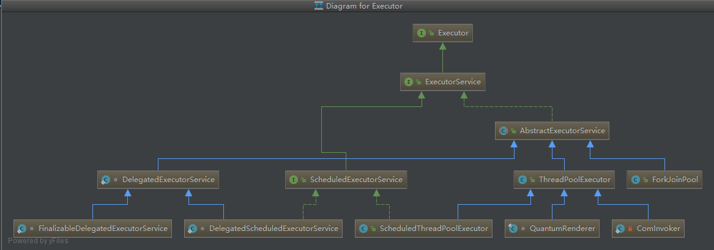

为什么需要线程池 操作系统中线程的实现有三种，一种是用户级线程，一种是内核支持线程，还有一种是前两种的组合方式。用户级线程是在用户空间实现的，而内核级线程是在OS内核空间实现的。JVM对于线程并没有明确的定义是用户线程还是内核线程，但Java常用的JVM HotSpot，它都是使用1:1线程模型即内核线程，线程的调度完全交给了操作系统内核；所以在HotSpot上创建线程需要操作系统从用户态切换到内核态，这个开销是巨大的。而Java的线程在使用完后就会被回收，而需要时又会被创建，所以通过将空闲线程管理起来成为线程池，当需要线程运行任务的时候就从线程池中拿线程，避免了线程的创建过程，提升效率。
Executor Java对于线程池的实现依赖于Executor框架，Executor框架UML图：

Executor接口：
1 2 3 4 public interface Executor void execute (Runnable command) }
Executor接口只提供了一个提交任务的方法;
ExecutorService接口：
1 2 3 4 5 6 7 8 9 10 11 12 13 14 15 16 17 18 19 20 21 22 23 24 25 26 27 28 29 30 31 32 33 34 35 36 37 38 39 40 41 42 43 44 45 public interface ExecutorService extends Executor void shutdown () List<Runnable> shutdownNow () ; boolean isShutdown () boolean isTerminated () boolean awaitTermination (long timeout, TimeUnit unit) throws InterruptedException ; <T> Future<T> submit (Callable<T> task) ; <T> Future<T> submit (Runnable task, T result) ; Future<?> submit(Runnable task); <T> List<Future<T>> invokeAll(Collection<? extends Callable<T>> tasks) throws InterruptedException; <T> List<Future<T>> invokeAll(Collection<? extends Callable<T>> tasks, long timeout, TimeUnit unit) throws InterruptedException; <T> T invokeAny (Collection<? extends Callable<T>> tasks) throws InterruptedException, ExecutionException ; <T> T invokeAny (Collection<? extends Callable<T>> tasks, long timeout, TimeUnit unit) throws InterruptedException, ExecutionException, TimeoutException ;}
ExecutorService接口扩展自Executor，相比Executor它提供了线程池生命周期管理的方法和各种形式任务的提交方法；
AbstractExecutorService抽象类实现了ExecutorService接口，为线程池提供了submit、invokeAny、invokeAll模板代码。
线程池实现类源码分析 继承自AbstractExecutorService的类都是Java提供的线程池的具体实现类；
ThreadPoolExecutor ThreadPoolExecutor有五个内部类：AbortPolicy、CallerRunsPolicy、DiscardOldestPolicy、DiscardPolicy、Worker，其中AbortPolicy、CallerRunsPolicy、DiscardOldestPolicy、DiscardPolicy四个内部类实现了RejectedExecutionHandler接口为线程池的拒绝策略，当线程池的任务缓存队列已满并且线程池中的线程数目达到maximumPoolSize，如果还有任务到来就会采取任务拒绝策略；
AbortPolicy:丢弃任务并抛出RejectedExecutionException异常；
CallerRunsPolicy：由调用线程处理该任务；
DiscardOldestPolicy：丢弃队列最前面的任务，然后重新尝试执行任务（重复此过程）；
DiscardPolicy：也是丢弃任务，但是不抛出异常；
Worker主要维护线程运行的中断状态，Worker也实现了AQS类。
ThreadPoolExecutor有四个构造方法
1 2 3 4 5 6 7 8 9 10 11 12 13 14 15 16 17 18 19 20 21 22 23 24 public ThreadPoolExecutor (int corePoolSize, int maximumPoolSize, long keepAliveTime, TimeUnit unit, BlockingQueue<Runnable> workQueue, ThreadFactory threadFactory, RejectedExecutionHandler handler) if (corePoolSize < 0 || maximumPoolSize <= 0 || maximumPoolSize < corePoolSize || keepAliveTime < 0 ) throw new IllegalArgumentException(); if (workQueue == null || threadFactory == null || handler == null ) throw new NullPointerException(); this .acc = System.getSecurityManager() == null ? null : AccessController.getContext(); this .corePoolSize = corePoolSize; this .maximumPoolSize = maximumPoolSize; this .workQueue = workQueue; this .keepAliveTime = unit.toNanos(keepAliveTime); this .threadFactory = threadFactory; this .handler = handler; }
构造函数参数意义：
corePoolSize：线程池中的核心线程数，当提交一个任务时，线程池创建一个新线程执行任务，直到当前线程数等于corePoolSize；如果当前线程数为corePoolSize，继续提交的任务被保存到阻塞队列中，等待被执行；如果执行了线程池的prestartAllCoreThreads()方法，线程池会提前创建并启动所有核心线程；
maximumPoolSize：线程池中允许的最大线程数。如果当前阻塞队列满了，且继续提交任务，则创建新的线程执行任务，前提是当前线程数小于maximumPoolSize；
keepAliveTime：线程空闲时的存活时间，即当线程没有任务执行时，继续存活的时间；默认情况下，该参数只在线程数大于corePoolSize时才有用；
unit：keepAliveTime的单位；
workQueue：用来保存等待被执行的任务的阻塞队列，且任务必须实现Runable接口；
threadFactory：创建线程的工厂，通过自定义的线程工厂可以给每个新建的线程设置一个具有识别度的线程名；
handler：线程池的饱和策略，当阻塞队列满了，且没有空闲的工作线程，如果继续提交任务，必须采取一种策略处理该任务；
其他构造函数都是调用这个构造函数实现的：
1 2 3 4 5 6 7 8 9 10 11 12 13 14 15 16 17 18 19 20 21 22 23 24 25 26 27 28 public ThreadPoolExecutor (int corePoolSize, int maximumPoolSize, long keepAliveTime, TimeUnit unit, BlockingQueue<Runnable> workQueue) this (corePoolSize, maximumPoolSize, keepAliveTime, unit, workQueue, Executors.defaultThreadFactory(), defaultHandler); } public ThreadPoolExecutor (int corePoolSize, int maximumPoolSize, long keepAliveTime, TimeUnit unit, BlockingQueue<Runnable> workQueue, RejectedExecutionHandler handler) this (corePoolSize, maximumPoolSize, keepAliveTime, unit, workQueue, Executors.defaultThreadFactory(), handler); } public ThreadPoolExecutor (int corePoolSize, int maximumPoolSize, long keepAliveTime, TimeUnit unit, BlockingQueue<Runnable> workQueue, ThreadFactory threadFactory) this (corePoolSize, maximumPoolSize, keepAliveTime, unit, workQueue, threadFactory, defaultHandler); }
一个任务通过 execute(Runnable)方法被添加到线程池。
execute方法：
1 2 3 4 5 6 7 8 9 10 11 12 13 14 15 16 17 18 19 20 21 22 23 24 25 26 27 28 29 30 31 32 33 public void execute (Runnable command) if (command == null ) throw new NullPointerException(); int c = ctl.get(); if (workerCountOf(c) < corePoolSize) { if (addWorker(command, true )) return ; c = ctl.get(); } if (isRunning(c) && workQueue.offer(command)) { int recheck = ctl.get(); if (! isRunning(recheck) && remove(command)) reject(command); else if (workerCountOf(recheck) == 0 ) addWorker(null , false ); } else if (!addWorker(command, false )) reject(command); }
ThreadPoolExecutor使用了一个ctl变量来存储线程池有效线程数量和线程池的状态；
ctl变量：
1 private final AtomicInteger ctl = new AtomicInteger(ctlOf(RUNNING, 0 ));
使用ctl变量判断线程池有效线程数量和线程池状态方法：
1 2 3 4 5 6 7 8 9 10 11 12 private static final int COUNT_BITS = Integer.SIZE - 3 ;private static final int CAPACITY = (1 << COUNT_BITS) - 1 ;private static final int RUNNING = -1 << COUNT_BITS;private static final int SHUTDOWN = 0 << COUNT_BITS;private static final int STOP = 1 << COUNT_BITS;private static final int TIDYING = 2 << COUNT_BITS;private static final int TERMINATED = 3 << COUNT_BITS;private static int runStateOf (int c) return c & ~CAPACITY; }private static int workerCountOf (int c) return c & CAPACITY; }private static int ctlOf (int rs, int wc) return rs | wc; }
ctl用一个32位int类型来存储有效线程数量和线程池状态，其中低29位存线程数，高3位存线程运行状态，所以线程池状态有如下五种：
RUNNING：-536870912
SHUTDOWN：0
STOP：536870912
TIDYING：1073741824
TERMINATED：1610612736
这几个状态的意义：
RUNNING：线程池正常运行，可以接受新的任务并处理队列中的任务；
SHUTDOWN：不再接受新的任务，但是会执行队列中的任务；
STOP：不再接受新任务，不处理队列中的任务；
TIDYING：所有任务已经终止，workerCount为0时，线程池转换成TIDYING状态，将会运行terminated()方法；
TERMINATED：terminated()方法已经运行完成；
启动新任务addWorker方法：
1 2 3 4 5 6 7 8 9 10 11 12 13 14 15 16 17 18 19 20 21 22 23 24 25 26 27 28 29 30 31 32 33 34 35 36 37 38 39 40 41 42 43 44 45 46 47 48 49 50 51 52 53 54 55 56 57 58 59 60 61 62 63 64 65 66 67 68 69 70 71 72 73 74 75 76 77 78 79 80 private boolean addWorker (Runnable firstTask, boolean core) retry: for (;;) { int c = ctl.get(); int rs = runStateOf(c); if (rs >= SHUTDOWN && ! (rs == SHUTDOWN && firstTask == null && ! workQueue.isEmpty())) return false ; for (;;) { int wc = workerCountOf(c); if (wc >= CAPACITY || wc >= (core ? corePoolSize : maximumPoolSize)) return false ; if (compareAndIncrementWorkerCount(c)) break retry; c = ctl.get(); if (runStateOf(c) != rs) continue retry; } } boolean workerStarted = false ; boolean workerAdded = false ; Worker w = null ; try { w = new Worker(firstTask); final Thread t = w.thread; if (t != null ) { final ReentrantLock mainLock = this .mainLock; mainLock.lock(); try { int rs = runStateOf(ctl.get()); if (rs < SHUTDOWN || (rs == SHUTDOWN && firstTask == null )) { if (t.isAlive()) throw new IllegalThreadStateException(); workers.add(w); int s = workers.size(); if (s > largestPoolSize) largestPoolSize = s; workerAdded = true ; } } finally { mainLock.unlock(); } if (workerAdded) { t.start(); workerStarted = true ; } } } finally { if (! workerStarted) addWorkerFailed(w); } return workerStarted; }
当new一个Worker实例的时候，Worker的构造函数通过调用ThreadFactory获得一个线程，并且保存在自己的成员变量thread中；
当添加任务成功后会调用Worker的thread的start()方法，通过另一个线程去执行Worker的run方法；
Worker的run方法：
1 2 3 4 5 6 7 8 9 10 11 12 13 14 15 16 17 18 19 20 21 22 23 24 25 26 27 28 29 30 31 32 33 34 35 36 37 38 39 40 41 42 43 44 45 46 47 48 49 50 public void run () runWorker(this ); } final void runWorker (Worker w) Thread wt = Thread.currentThread(); Runnable task = w.firstTask; w.firstTask = null ; w.unlock(); boolean completedAbruptly = true ; try { while (task != null || (task = getTask()) != null ) { w.lock(); if ((runStateAtLeast(ctl.get(), STOP) || (Thread.interrupted() && runStateAtLeast(ctl.get(), STOP))) && !wt.isInterrupted()) wt.interrupt(); try { beforeExecute(wt, task); Throwable thrown = null ; try { task.run(); } catch (RuntimeException x) { thrown = x; throw x; } catch (Error x) { thrown = x; throw x; } catch (Throwable x) { thrown = x; throw new Error(x); } finally { afterExecute(task, thrown); } } finally { task = null ; w.completedTasks++; w.unlock(); } } completedAbruptly = false ; } finally { processWorkerExit(w, completedAbruptly); } }
从workQueue队列获取task方法getTask()：
1 2 3 4 5 6 7 8 9 10 11 12 13 14 15 16 17 18 19 20 21 22 23 24 25 26 27 28 29 30 31 32 33 34 35 36 37 38 39 40 41 42 private Runnable getTask () boolean timedOut = false ; for (;;) { int c = ctl.get(); int rs = runStateOf(c); if (rs >= SHUTDOWN && (rs >= STOP || workQueue.isEmpty())) { decrementWorkerCount(); return null ; } int wc = workerCountOf(c); boolean timed = allowCoreThreadTimeOut || wc > corePoolSize; if ((wc > maximumPoolSize || (timed && timedOut)) && (wc > 1 || workQueue.isEmpty())) { if (compareAndDecrementWorkerCount(c)) return null ; continue ; } try { Runnable r = timed ? workQueue.poll(keepAliveTime, TimeUnit.NANOSECONDS) : workQueue.take(); if (r != null ) return r; timedOut = true ; } catch (InterruptedException retry) { timedOut = false ; } } }
线程结束后清理方法processWorkerExit()：
1 2 3 4 5 6 7 8 9 10 11 12 13 14 15 16 17 18 19 20 21 22 23 24 25 26 27 28 29 30 31 32 33 34 35 36 37 private void processWorkerExit (Worker w, boolean completedAbruptly) if (completedAbruptly) decrementWorkerCount(); final ReentrantLock mainLock = this .mainLock; mainLock.lock(); try { completedTaskCount += w.completedTasks; workers.remove(w); } finally { mainLock.unlock(); } tryTerminate(); int c = ctl.get(); if (runStateLessThan(c, STOP)) { if (!completedAbruptly) { int min = allowCoreThreadTimeOut ? 0 : corePoolSize; if (min == 0 && ! workQueue.isEmpty()) min = 1 ; if (workerCountOf(c) >= min) return ; } addWorker(null , false ); } }
尝试停止线程池方法tryTerminate()：
1 2 3 4 5 6 7 8 9 10 11 12 13 14 15 16 17 18 19 20 21 22 23 24 25 26 27 28 29 30 31 32 33 34 35 36 37 38 39 40 41 42 final void tryTerminate () for (;;) { int c = ctl.get(); if (isRunning(c) || runStateAtLeast(c, TIDYING) || (runStateOf(c) == SHUTDOWN && ! workQueue.isEmpty())) return ; if (workerCountOf(c) != 0 ) { interruptIdleWorkers(ONLY_ONE); return ; } final ReentrantLock mainLock = this .mainLock; mainLock.lock(); try { if (ctl.compareAndSet(c, ctlOf(TIDYING, 0 ))) { try { terminated(); } finally { ctl.set(ctlOf(TERMINATED, 0 )); termination.signalAll(); } return ; } } finally { mainLock.unlock(); } } }
中断正在等待的线程方法interruptIdleWorkers()：
1 2 3 4 5 6 7 8 9 10 11 12 13 14 15 16 17 18 19 20 21 22 23 private void interruptIdleWorkers (boolean onlyOne) final ReentrantLock mainLock = this .mainLock; mainLock.lock(); try { for (Worker w : workers) { Thread t = w.thread; if (!t.isInterrupted() && w.tryLock()) { try { t.interrupt(); } catch (SecurityException ignore) { } finally { w.unlock(); } } if (onlyOne) break ; } } finally { mainLock.unlock(); } }
线程池关闭shutdown()方法：
1 2 3 4 5 6 7 8 9 10 11 12 13 14 15 16 17 public void shutdown () final ReentrantLock mainLock = this .mainLock; mainLock.lock(); try { checkShutdownAccess(); advanceRunState(SHUTDOWN); interruptIdleWorkers(); onShutdown(); } finally { mainLock.unlock(); } tryTerminate(); }
线程池立即关闭方法shutdownNow()：
1 2 3 4 5 6 7 8 9 10 11 12 13 14 15 16 17 18 19 public List<Runnable> shutdownNow () List<Runnable> tasks; final ReentrantLock mainLock = this .mainLock; mainLock.lock(); try { checkShutdownAccess(); advanceRunState(STOP); interruptWorkers(); tasks = drainQueue(); } finally { mainLock.unlock(); } tryTerminate(); return tasks; }
线程池工具类Executors Executors提供了一系列静态工厂方法用于创建各种线程池；
通过Executors Java提供四种线程池，分别为：
newCachedThreadPool：创建一个可缓存线程池；
newFixedThreadPool：创建一个定长线程池；
newScheduledThreadPool：创建一个定长线程池，支持定时及周期性任务执行；
newSingleThreadExecutor：创建一个单线程化的线程池，它只会用唯一的工作线程来执行任务，保证所有任务按照指定顺序(FIFO, LIFO, 优先级)执行；
newCachedThreadPool方法：
1 2 3 4 5 6 7 8 9 10 11 12 public static ExecutorService newCachedThreadPool () return new ThreadPoolExecutor(0 , Integer.MAX_VALUE, 60L , TimeUnit.SECONDS, new SynchronousQueue<Runnable>()); } public static ExecutorService newCachedThreadPool (ThreadFactory threadFactory) return new ThreadPoolExecutor(0 , Integer.MAX_VALUE, 60L , TimeUnit.SECONDS, new SynchronousQueue<Runnable>(), threadFactory); }
newFixedThreadPool方法：
1 2 3 4 5 6 7 8 9 10 11 12 public static ExecutorService newFixedThreadPool (int nThreads) return new ThreadPoolExecutor(nThreads, nThreads, 0L , TimeUnit.MILLISECONDS, new LinkedBlockingQueue<Runnable>()); } public static ExecutorService newFixedThreadPool (int nThreads, ThreadFactory threadFactory) return new ThreadPoolExecutor(nThreads, nThreads, 0L , TimeUnit.MILLISECONDS, new LinkedBlockingQueue<Runnable>(), threadFactory); }
newScheduledThreadPool方法：
1 2 3 4 5 6 7 8 public static ScheduledExecutorService newScheduledThreadPool (int corePoolSize) return new ScheduledThreadPoolExecutor(corePoolSize); } public static ScheduledExecutorService newScheduledThreadPool ( int corePoolSize, ThreadFactory threadFactory) return new ScheduledThreadPoolExecutor(corePoolSize, threadFactory); }
newSingleThreadExecutor方法：
1 2 3 4 5 6 7 8 9 10 11 12 13 14 public static ExecutorService newSingleThreadExecutor () return new FinalizableDelegatedExecutorService (new ThreadPoolExecutor(1 , 1 , 0L , TimeUnit.MILLISECONDS, new LinkedBlockingQueue<Runnable>())); } public static ExecutorService newSingleThreadExecutor (ThreadFactory threadFactory) return new FinalizableDelegatedExecutorService (new ThreadPoolExecutor(1 , 1 , 0L , TimeUnit.MILLISECONDS, new LinkedBlockingQueue<Runnable>(), threadFactory)); }